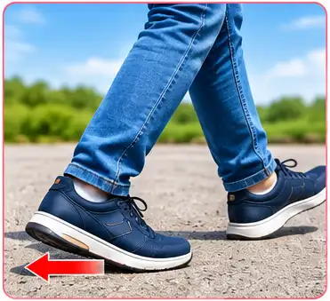
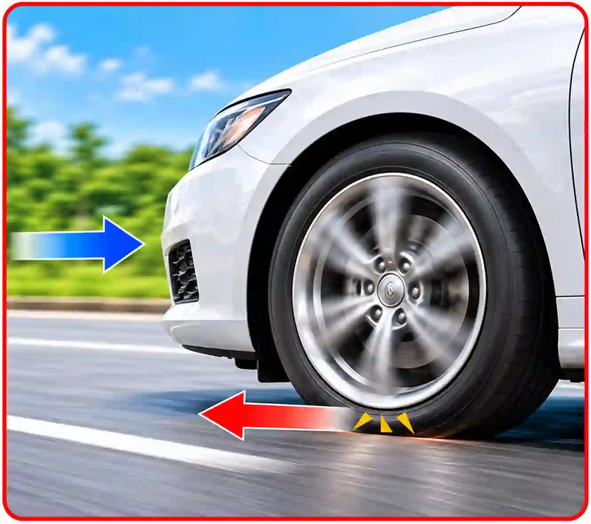
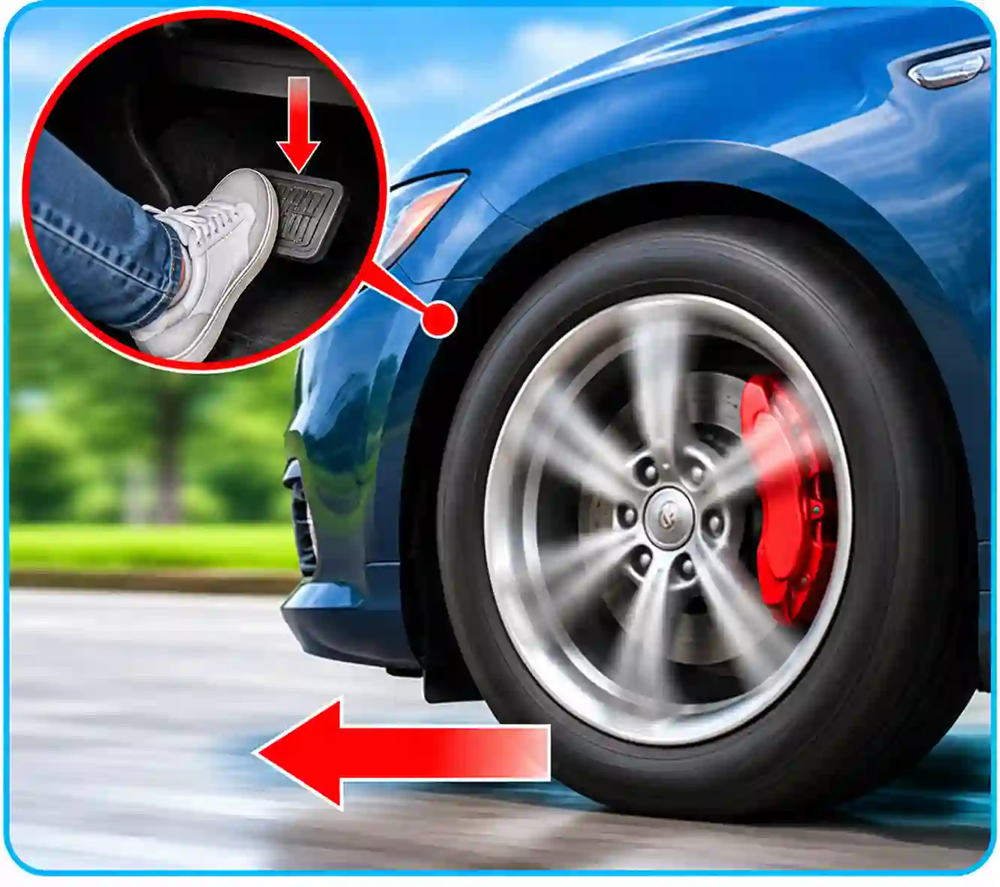
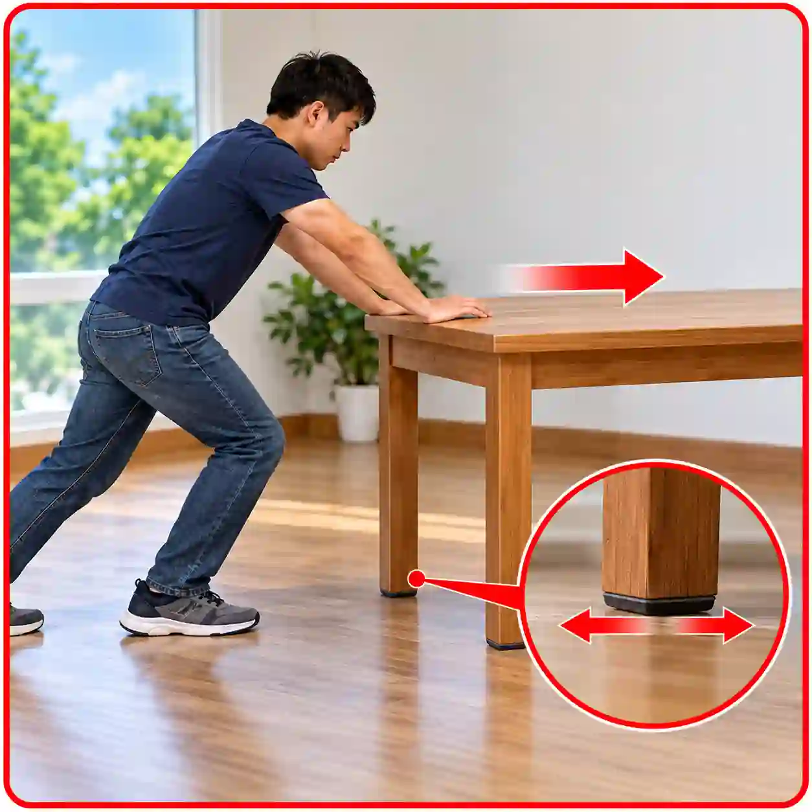
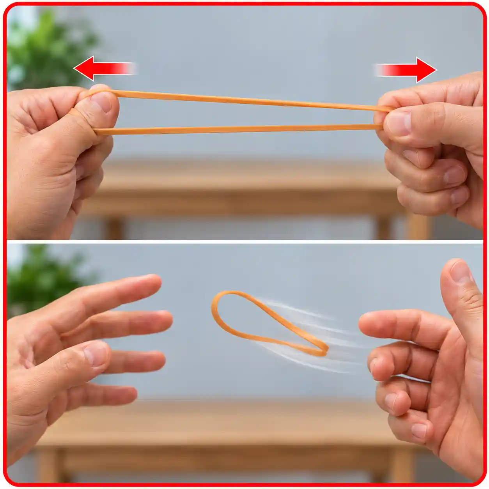

ပွတ်မှုအားနှင့် ရုန်းပြန်အားများ
(Frictional Force and Elastic Forces)
ပွတ်မှုအား (Frictional Force)
မျက်နှာပြင်တစ်ခုပေါ်တွင် ရွေ့လျားနေသော အရာဝတ္ထုတိုင်း၌ ရွေ့လျားမှုကို ခုခံဟန့်တားနေသောအားကို ပွတ်မှုအား (Frictional Force) ဟုခေါ်သည်။ ရွေ့လျားနေသောဝတ္ထုနှင့် ထိတွေ့နေသော မျက်နှာပြင်ကြားရှိ ပွတ်မှုအားသည် ဝတ္ထုရွေ့လျားသည့် ဦးတည်ဘက်နှင့် ဆန့်ကျင်သည်။ ပွတ်မှုအား၏ ပမာဏသည် မျက်နှာပြင်တို့၏ ချောမွတ်မှု၊ ပုံပျက်မှုနှင့် ကြမ်းတမ်းမှုတို့အပေါ်တွင် မူတည်သည်။ နေ့စဉ်ဘဝတွင် ပွတ်မှုအားနှင့် အမြဲထိတွေ့နေရသည်။
ပွတ်မှုအား သင်ခန်းစာတွင် ဖော်ပြထားသော လက်တွေ့လုပ်ဆောင်ချက်များနှင့် ဥပမာများနှင့် လေ့လာနိုင်ပါသည်။

ကွန်ကရစ်လမ်းပေါ်တွင် လမ်းလျှောက်ခြင်း
- လမ်းမျက်နှာပြင်နှင့် ဖိနပ်ကြားတွင် ပွတ်မှုအား ဖြစ်ပေါ်သည်။
- ပွတ်မှုအားကြောင့် ခြေထောက်သည် လမ်းပေါ်တွင် ချော်မသွားဘဲ လမ်းလျှောက်နိုင်သည်။
ရေညှိတက်နေသော လမ်းပေါ်တွင် လမ်းလျှောက်ခြင်း
- ရေညှိနှင့် ရေစိုနေသော မျက်နှာပြင်တွင် ပွတ်မှုအား လျော့နည်းနိုင်သည်။
- ထို့ကြောင့် ခြေထောက်ချော်လဲနိုင်ခြေ ပိုများလာသည်။

ကားမောင်းစဉ် ကားဘီး၌ ဖြစ်ပေါ်သောအား
- ကားတာယာနှင့် လမ်းမျက်နှာပြင်ကြား ပွတ်မှုအား ဖြစ်ပေါ်သည်။
- ထိုအားကြောင့် ကားဘီးသည် လမ်းကို ကောင်းစွာ ဆုပ်ကိုင်နိုင်ပြီး ကားကို ရွေ့လျားစေသည်။

ဘရိတ်နင်းသောအခါ ဖြစ်ပေါ်သောအား
- ဘရိတ်ပြားနှင့် ဘရိတ်ဒစ်ကြား ပွတ်မှုအား ဖြစ်ပေါ်သည်။
- ထိုအားကြောင့် ကားဘီး၏ လည်ပတ်မှု နှေးကွေးလာပြီး ကားကို ရပ်တန့်စေနိုင်သည်။
နံရံတွင် သံရိုက်သောအခါ ဖြစ်ပေါ်သောအား
- သံနှင့် နံရံကြား ပွတ်မှုအား ဖြစ်ပေါ်သည်။
- ထိုအားက သံကို နံရံအတွင်း တင်းကျပ်စွာ နေစေရန် ကူညီပေးသည်။

စားပွဲကို တွန်းရွှေ့ခြင်း
- စားပွဲ၏ ခြေထောက်နှင့် ကြမ်းပြင်ကြား ပွတ်မှုအား ဖြစ်ပေါ်သည်။
- စားပွဲကို ရွှေ့ရန် ပွတ်မှုအားကို ကျော်လွန်နိုင်သော တွန်းအား လိုအပ်သည်။
ရုန်းပြန်အား (Elastic Force)
ရုန်းပြန်ပစ္စည်းများပေါ်သို့ အားသက်ရောက်ပြီး ပြန်လွှတ်လိုက်သောအခါ မူလပုံသဏ္ဌာန်သို့ ပြန်ရောက်အောင် ထိန်းထားနိုင်သော အားကို ရုန်းပြန်အား (Elastic Force) ဟုခေါ်သည်။
ရုန်းပြန်အား သင်ခန်းစာတွင် ဖော်ပြထားသော လက်တွေ့လုပ်ဆောင်ချက်များနှင့် ဥပမာများနှင့် လေ့လာနိုင်ပါသည်။
ကားတာယာကို လေထိုးခြင်း
- တာယာအတွင်း လေဖိအား တိုးလာပြီး တာယာ၏ ပုံသဏ္ဌာန်ကို ထိန်းသိမ်းပေးသည်။
- တာယာသည် သတ်မှတ်ထားသော ပုံသဏ္ဌာန်နှင့် ဖိအားအတိုင်း ရှိနေစေရန် လေဖိအားက အထောက်အကူပြုသည်။
လေးမြားကို ဆွဲတင်ခြင်း
- လေးကြိုးကို ဆွဲလိုက်သောအခါ လေးတံ ကွေးညွတ်လာပြီး မူလပုံသဏ္ဌာန်သို့ ပြန်ရောက်ရန် ရုန်းပြန်အား ဖြစ်ပေါ်သည်။
- လွှတ်လိုက်သောအခါ သိုလှောင်ထားသော စွမ်းအင်သည် မြားထံ လွှဲပြောင်းသွားပြီး မြားသည် ရှေ့သို့ ပျံသန်းသွားသည်။
စပရင်မွေ့ရာကို ဖိခြင်း
- လူထိုင်ခြင်း သို့မဟုတ် လှဲအိပ်ခြင်းကြောင့် စပရင်များ ဖိကျုံ့သွားသည်။
- ဖိအားကို ဖယ်ရှားလိုက်သောအခါ စပရင်များသည် မူလအနေအထားသို့ ပြန်ရောက်ရန် ရုန်းပြန်အား သက်ရောက်သည်။

သားရေကွင်းကို ဆွဲဆန့်ပြီး လွှတ်ခြင်း
- သားရေကွင်းကို ဆွဲဆန့်သောအခါ ပုံသဏ္ဌာန် ပြောင်းလဲသွားသည်။
- လွှတ်လိုက်သောအခါ မူလပုံသဏ္ဌာန်သို့ ပြန်ရောက်ရန် ရုန်းပြန်အား ဖြစ်ပေါ်သည်။